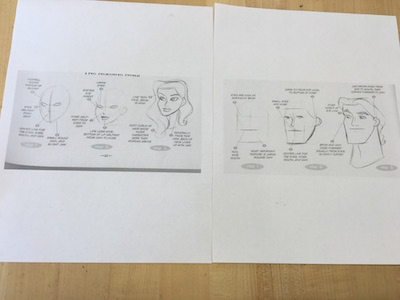
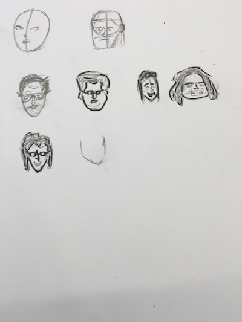

Day 8
04/20/16
I started working on a game in javascript. It was inspired by Kaleo and other friends. You have to catch a teacher before they hit the floor. Titled "Catch an Opp", was coined by Kaleo Grant (Opp is a slang word for teacher or authority). I worked on the game, styling it and coding it. It is almost done. I referenced W3 schools for help in javascript documentation. Click the link here to see the game so far.
I went to James to get help a drew sketches for the characters.
Below is the progress I made
 